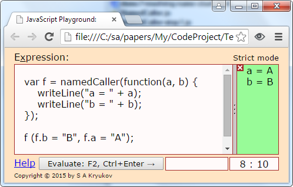

Epigraph:
What's in a name? that which we call a rose
By any other name would smell as sweet
William Shakespeare, Romeo and Juliet
Contents
- Why Named Arguments?
- Some Good Ideas
- Some Better Ideas
- Testing Code Samples on JavaScript Playground
- Solution: the Usage
- Solution: How it Works?
- Never Forget "this"
- Discussion
- Conclusions
1 Why Named Arguments?
This short article is written to answer one frequently asked question on JavaScript: are there the named function arguments? Short answer is: there is no such thing. But then, what to do?
In first lines of this article, I want to assure the reader: this is not about the well-known technique of passing objects with properties representing arguments, not like { oneArgument:3, anotherArgument: 3 }. This is something very different. Take a look at the picture on top. It illustrates the idea.
Named function parameters is a feature of good number of programming languages.
First of all, why people ask about named arguments? Well, because they are quite convenient.
- You don't have to remember the order of arguments.
- The code of the call statement becomes more readable; it makes it obvious to see the role each value passed to a method plays.
- Some or all named arguments can be omitted from the call statement, then the default values are used.
- Named arguments can be mixed with positional ones.
Of course, one has to remember the names arguments, but this is not a serious drawback, because the argument names play much better mnemonic role than order. Also, readability of code is way more important that the ease of coding in first place. But the really powerful benefit would be the support of development process. Ideally, the system should detect all cases of misspelled or misused arguments. In compiler-based technologies, the compiler can show all the problems, but in interpreter-based system the runtime system should do it, which would be still much better than nothing. And this is where existing JavaScript solutions fail. Can we do any better? Let's see, but first let's discuss some good ideas which everyone can find in the Web.
2 Some Good Ideas
First and foremost, we need to discuss the same very thing I claimed as what this article is not about. This is the "object-passing trick". The idea is trivial enough, can be reinvented almost immediately and is still quite reasonable. Instead of passing many parameters you pass the object with some properties representing the parameter. At the point of the call, it can be all of the parameters uses, or a part of them.
Instead of having
function myFunction(first, medium, last) {
alert("first: " + first + "; medium: "
+ medium + "; last: " + last);
}
one can have a single-parameter function and call with one parameter:
var myFunction = function (object) {
alert("first: " + object.first + "; medium: "
+ object.medium + "; last: " + object.last);
}
myFunction({medium: 2, last: 3, first: 1});
The problems of this approach are pretty obvious. First of all, it can be hard to find out the "argument names", which are becomes the property names. They can be hidden deep in the function implementation. And of course the misspelling of the property name may pass nearly unnoticeable. But this approach has good flexibility. First of all, the order of the properties in the call just doesn't matter. The object types always don't match, but JavaScript access them by name, and this is all that matters. And of course the arguments (properties) can be omitted in call. They pass the undefined objects to the function.
Despite of all the problems of this style, it is something which makes a lot of sense: it does not have any significant overhead and is used in many important methods. One important example is the method of embedded Object object, such as Object.defineProperty: https://developer.mozilla.org/en-US/docs/Web/JavaScript/Reference/Global_Objects/Object/defineProperty.
Another interesting idea is just the description of one's individual coding style: some intermediate named variables are declared, initialized, and then used in the call:
var width = 70, height = 115;
someFunction(width, height);
Or, even more interestingly
var width, height;
someFunction(width = 50, height = 114);
Please see the answer by the Stackoverflow members dav_i and Ray Perea here: http://stackoverflow.com/questions/11796093/named-parameters-in-javascript.
Well, nothing is checked up by the runtime system; the names can be well misspelled; the order of arguments cannot be changed. The context is contaminated with redundant variables, which is always bad. It's just the matter of individual discipline. The only problem solved here is readability and better maintenance of the code, especially if one comes back to the same code after prolonged period of time. But the readability along is important enough. Let's remember just this form of the call, its syntactic style; it seems to be helpful.
Now, let's move to more inspiring and less trivial ideas.
First of all, the most frequently referenced solution is the one which is presented on jsFiddle in this way: http://jsfiddle.net/9U328.
The idea is that the function called parameterfy is used to wrap original function. It is represented as a string, which is parsed to extract names of the arguments. Then the wrapper function is returned, this function accepts only one argument representing the object with properties matching argument names. The wrapper function uses this object to form the array of arguments used to pass to the original function. It works.
The quality of this implementation is dreadful though. First of all, it fails when the number of arguments is zero. This is just a bug which is easy to fix. The worst thing is: the argument "this" is totally lost from these solution, and this is unforgivable mistake. Without this implicitly passed argument (which can also be passed explicitly via .call or .apply methods), there is no decent programming.
It's not very wonderful that this solution is the one referenced in very many places, and people showing this solution don't reference the sources, but it's obvious enough that so many people could not come to exact same solution, using the same exact source code with same exact bugs. Face is: we are dealing with the community where plagiarism flourishes, colleagues, my congratulations! I did not want to quote all those disgusting publications I found, referenced only one most convenient for reading. Anyway, the original and unknown author of this code gave us an interesting idea.
Another implementation I found is much better. It is a part of "bob.js JavaScript Framework":
http://www.bobjs.com,
http://bobjs.codeplex.com.
This implementation is free from the problems I mentioned; most importantly, it correctly passes "this". Also, it preserves the original function, which is the target function called.
Anyway, all these solutions have one problem: if one misspells some argument names, it cannot be easily detected, which partly defeats the purpose.
3 Some Better Ideas
Can we have something better? I think so.
My major goal is to eliminate possible misspelling of the named argument.
The naive technique after Ray Perea provided me a hint. My idea was: we need to wrap an original function not in another function, but in some non-function object. Later on, I realized that it still should be a function, but with properties, which is not a very usual construct, even for JavaScript. Anyway, the functions are first-class citizen in JavaScript, so they can have properties as any other object. I need these properties to represent the named arguments of the original target function. The calling code should assign values to these properties, which can be done right in the call statement.
This way, I can seal the wrapper function object, so no properties can be added implicitly. If calling code is written with some misspelled arguments, the attempt to assign a value to a non-existent property will be detected. Unfortunately, the ECMAScript standard does not require the JavaScript engine to respect sealing, unless the code written in strict mode. But nothing prevents us from writing all out code in strict mode, which is a good idea by many other reasons.
Now I'm ready to show how it looks in practice, but first I want to show how we can use the code samples I use to illustrate the conception.
4 Testing Code Samples on JavaScript Playground
JavaScript Playground is a micro platform for JavaScript execution I developed to demonstrate the sample code. This is a spin-off from my original JavaScript Calculator project. This is how it works: I added the API to the calculator, which is the JavaScript file to be included in a small HTML file with some script representing a code sample. The API is called from the body onload script and founds a different page, the JavaScript Playground. Using the Web storage sessionStorage, the API passes 3 parameters to the JavaScript Playground: 1) text of the sample script, 2) the optional flag preventing JavaScript Playground from immediate execution on page load, 3) another optional flag defining the usage strict mode; true means strict mode, false means non-strict mode, and undefined indicates that the user can turn strict mode on or off at any time. Please see " JavaScript.Playground/playgroundAPI.js" in the downloadable code provided with the present article and the explanation of the switch (7. Dynamic Strict Mode Switching and Web Storage).
The code samples to this article uses default auto-execute flag and strict mode flag, as I want to demonstrate the protection of the named argument mechanism from misspelling of the argument names.
After the sample is loaded and optionally executed, the user can modify the sample code and execute it any number of times. If this person manages to hang the script, long time of waiting for the script execution timeout will be needed. :-)
5 Solution: the Usage
For example, let's consider some "ordinary" function using, say, 3 arguments:
var f = function(first, medium, last) {
alert("first: " + first + "; medium: " + medium + "; last: " + last
+ "; THIS: " + ((typeof this == typeof f) ? typeof this : this));
return first + medium + last;
};
f(1, 2, 3);
This is what we usually do and something which doesn't need explanations. The only item which may need some explanation is somewhat "sophisticated" handling of implicit "this" argument. This is really simple. In further code samples, we will face cases when "this" argument is a function; I simply want to avoid output of the whole function body which would otherwise be concatenated to the rest of the string; I just want to add a single word "function".
In further samples, I'll replace alert with writeLine, the function from my JavaScript Playground API. I do it only for the convenience of showing code samples; it has nothing to do with the topic of the present article. You can write any other implementation of the sample function; the topic of this article is how we pass the arguments to it.
Now, with the facility I offer, the function can be wrapped into this named-argument function:
var f = namedCaller(function(first, medium, last) {
writeLine("first: " + first + "; medium: " + medium + "; last: " + last
+ "; THIS: " + ((typeof this == typeof f) ? typeof this : this));
return first + medium + last;
});
It can be called with arguments passed based on assignment operators. Naturally, they can come in any order; it does not affect the function operation:
f(f.medium = 2, f.last = 3, f.first = 1);
Some or all of the arguments can be missing; a missing argument is passed as undefined:
f(f.last = 30, f.first = 10);
If the function and the call are defined on the top level of the script, the result of last call will be
first: 10; medium: undefined; last: 30; THIS: undefined
The value of "this" depends on the strict mode. If the mode is strict, "this" is undefined, but for non-strict mode it will be equal to the window object (for JavaScript embedded in the browser, of course), so the result will look like
first: 1; medium: 2; last: 3; THIS: [object Window]
Here is the most important feature specific to my implementation of named argument: you can omit an argument, but cannot misspell the argument's name. I'll explain how it is achieved below, but the effect is this: the exception TypeError will be thrown: "function... is not extensible".
This effect is based on the effect of object sealing; I'll explain it in next section. For now, it's important to know that, unfortunately, sealing does not have to be respected in non-strict mode. But anyway, it is highly advisable to do all the development in strict mode; even if the developer wants to remove strictness from the product, it can be done on the very last stage of the project, when all the bugs related to possible misspelling are already, hopefully, eliminated.
The best description of the strict mode and tutorial on its use I know can be found here: https://developer.mozilla.org/en-US/docs/Web/JavaScript/Reference/Strict_mode.
The original function passed as an argument to the function namedCaller is preserved as the property of this function object under the name "targetFunction". Why? Because this way the alternative of using the usual positional argument passing is preserved. This is how it can be called:
f.targetFunction(100, 200, 300);
With the following result:
first: 100; medium: 200; last: 300; THIS: function
It's interesting to know that, as the object f returned by namedCaller is still used, one can still use assignment kind of syntax, but, quite obviously, the correspondence between arguments name and positions won't be maintained, so the call
f.targetFunction(f.medium = 200, f.last = 300, f.first = 100);
will result in
first: 200; medium: 300; last: 100; THIS: function
Note that this is the case when the argument "this" passed to the target function is also a function. This function is, of course, namedCaller.
Anyway, the argument "this" can be passed explicitly to either target function or wrapper function. We will discuss it in further detail in the section 7.
6 Solution: How it Works?
This is the complete implementation ("NamedCaller.js"):
"use strict";
function namedCaller(targetFunction, targetFunctionPropertyName) {
if (!targetFunctionPropertyName) targetFunctionPropertyName = "targetFunction";
var wrapper = (function createWrapperFunction() {
var prepareArguments = function (self) {
var argumentValues = [];
for (var index = 0; index < argumentNames.length; ++index)
argumentValues[index] = self[argumentNames[index]];
return argumentValues;
}
var cleanUp = function (self) {
for (var index = 0; index < argumentNames.length; ++index)
self[argumentNames[index]] = undefined;
}
return function () {
var argumentValues = prepareArguments(wrapper);
cleanUp(wrapper);
return targetFunction.apply(this, argumentValues);
}
})();
var argumentNames = (function parseArguments(self) {
var argumentNames = targetFunction.toString().
match(/function[^(]*\(([^)]*)\)/)[1].split(/,\s*/);
if (!argumentNames || !argumentNames[0])
argumentNames = [];
for (var index = 0; index < argumentNames.length; ++index)
self[argumentNames[index]] = undefined;
return argumentNames;
})(wrapper);
Object.defineProperty(wrapper, targetFunctionPropertyName,
{ enumerable: true, value: targetFunction });
Object.seal(wrapper);
return wrapper;
};
I used the common idea of taking a function object targetFunction and parsing its string representation, to extract argument names. Of course, the bug left by parametrify implementation is not overlooked. This part is implemented in the function parseArguments. The set of argument names, argumentNames, is used in the implementation of the wrapper function created above the parsing. It does not create any problem, because this set of names is used only when the function is called.
Important part of parseArguments is adding the properties to the object wrapper, one property per argument name. Note that a name of some property can be the same as the function name, but name clash between argument names is impossible, it will be detected as SyntaxError with the "duplicate formal argument" message. This way, all the names of the properties will remain unique, and no re-definition of the properties will be done.
One more property is defined, targetFunction. Importantly, this is the only place where a property name clash could happen. To prevent any possible clashes, a second formal argument of the function namedCalled is added, targetFunctionPropertyName. What to do if you have one of the formal arguments called "targetFunction"? To prevent the name clash without renaming it, the property targetFunction can be given an alternative name.
For example, a function
var f = namedCaller(function(targetFunction, first, medium, last) {
writeLine(
"first: " + first + "; medium: " + medium +
"; last: " + last + "; targetFunction: " + targetFunction +
"; THIS: " + this);
return first + medium + last;
}, "originalFunction");
can be called with this named targetFunction argument:
f(f.medium = 2, f.last = 3, f.first = 1, f.targetFunction="TF");
and the target function still can be called directly, with positional argument passing:
f.originalFunction.call(11, 12, 13, "TF");
See also the demo code sample "demo7-resolving-name-clash.html".
Note that the property targetFunction is created using Object.defineProperty. This is done to prevent overriding the value of this property.
By the way, one of the previous versions of namedCaller used Object.defineProperty to define each and every property, until I noticed some benefit of making all those properties enumerable. Then, for the properties representing the call arguments, this method of property definition would give exact same effect as the default method. But why enumerable? Because during development, the developer can quickly dump the wrapper function object returned by namedCaller and obtain the reminder of the available arguments names. The dump method I use in my code samples is a part of JavaScript Playground, but one can easily write similar code. Here is a simplified implementation suitable for inspection of such wrapper functions:
function dumpObject(object, newLine) {
var result = "";
for (var index in object) {
var value = object[index];
var quote = "";
if (value) {
if (value && value.constructor == Function) {
var bodyIndex = value.toString().indexOf(")");
value = value.toString().substr(0, bodyIndex + 1);
} else if (value.constructor == String)
quote = "\"";
}
result += index + ": " + quote + value + quote + newLine;
}
return result;
}
See also "sample-dumpObject.html". Here, newLine depends on where you want to insert the text; it could be "\n", "<br/>", etc.
And finally, the resulting wrapper function is sealed. It prevents misspelling of the named arguments in strict mode.
Note that the argument "this" is passed explicitly to the wrapped target function from the wrapper function. This is a critically important part which I want to discuss separately in next section.
7 Never Forget "this"
First of all, "this" argument can be passed explicitly using one of two functions, .call or .apply. They are explained, for example, here:
https://developer.mozilla.org/en-US/docs/Web/JavaScript/Reference/Global_Objects/Function/call
https://developer.mozilla.org/en-US/docs/Web/JavaScript/Reference/Global_Objects/Function/apply.
Their use is illustrated in the demo sample "demo2-basic-usage.html":
f.call("some object", f.medium = 2, f.last = 3, f.first = 1);
f.apply("some other object", [f.medium = 2, f.last = 3, f.first = 1]);
f.targetFunction.call(110, 111); f.targetFunction.call(document, 1.4, null, 1.5);
Let's discuss importance of "this" on the following examples. I illustrated its use on four demo samples provided with source code under the names "demo?-using-this*.html" files, please see. First, let's assume we have created some event handler for one single HTML element. In my example, this is the element already defined in my JavaScript Playground, part of its UI, accessible as elements.result; you will locate it by the text "Click here!". Here is the handler code, which can also be found in the file "demo3-using-this-step1.html":
elements.result.onclick = function () {
var element = document.createElement("div");
element.style.position = "absolute";
element.style.left = this.offsetLeft;
element.style.bottom = 0;
element.style.backgroundColor = "yellow";
element.style.border = "solid thin black";
element.style.borderRadius = "3px";
element.style.color = "red";
element.style.padding = "1em";
element.innerHTML = "Some text<br/>Some more text<br/><br/>Click here to close it";
element.onclick = function () { this.parentElement.removeChild(this); }
this.parentElement.appendChild(element);
}
Essentially, this handler creates some "pop-up" element with some text, which can be removed by clicking on it.
So far so good, but let's assume you need to abstract out the handler code. One of the reasons is that you may want to reuse the same handler code for more than one HTML element, but you also may want to parameterize the features you use in the handler, in this case, it would be the text and styles of the pop-up element. One little problem is: "this" is an essential argument which is used in all event handler to pass the reference to the target object. In this case, this is the reference to an HTML element being clicked on. Of course, you can always can add another, explicit argument to represent this reference, but this is awkward refactoring step, because you have to do replacements in all the code, presumably already well debugged and tested. And this is totally unnecessary, because you can always pass "this" explicitly using either .call or .apply function. This is how it can be refactored ("demo4-using-this-step2.html"):
function clickHandler (text, padding, color, backgroundColor, border, borderRadius) {
var element = document.createElement("div");
element.style.position = "absolute";
element.style.left = this.offsetLeft;
element.style.bottom = 0;
element.style.padding = "1em";
element.innerHTML = text;
element.style.color = color;
element.style.backgroundColor = backgroundColor;
element.style.border = border;
element.style.borderRadius = borderRadius;
element.onclick = function () { this.parentElement.removeChild(this); }
this.parentElement.appendChild(element);
}
elements.result.onclick = function () {
clickHandler.call(this,
"Positional arguments<br/><br/>Click here to close it",
"1em",
"red",
"yellow",
"solid thin black",
"3px");
}
So, how can we do the same thing with my passing-by-name mechanism? No problem at all, because "this" is properly passed. This is how it may look (see "demo5-using-this-step3.html"):
var f = namedCaller(function(text, padding, color, backgroundColor, border, borderRadius) {
var element = document.createElement("div");
element.style.position = "absolute";
element.style.left = this.offsetLeft;
element.style.bottom = "1em";
element.style.padding = padding ? padding : "0.4em";
element.innerHTML = text;
element.style.color = color;
element.style.backgroundColor = backgroundColor;
element.style.border = border;
element.style.borderRadius = borderRadius;
element.onclick = function () { this.parentElement.removeChild(this); }
this.parentElement.appendChild(element);
});
elements.result.onclick = function () {
f.call(
this,
f.backgroundColor = "PowderBlue",
f.text = "Passing arguments by name!<br/><br/>Click here to close it",
f.border = "solid thin black");
}
This demo code illustrates that the arguments used for parameterization of those pop-up features can come in arbitrary order or be omitted.
But the most important use of this comes with the set of objects created with the help of a constructor. Let's consider the following function playing the role of the constructor:
var A = function (initialValue) {
this.value = initialValue;
this.show = function () { return this.value + 1; };
this.f = namedCaller(function (add, multiply) { return (add + this.value) * multiply; });
}
This is how it can be called with argument passed by name
var fReturn = a.f(a.f.add = 3, a.f.multiply = 0.5);
See also the demo code sample "demo6-using-this.html".
As "this" is essentially used in the function a.f to pass the value of another property, value, it is critically important that the value of "this" is passed correctly. Note that explicit passing of "this" is not needed, and it would be inacceptable. This is done in the implementation of namedCaller.
8 Discussion
The only potentially confusing thing about this approach is that the method of parameter passing has nothing to do with the parameters passed in a call statement.
It should be quite apparent that the call I demonstrated
f(f.medium = 2, f.last = 3, f.first = 1);
if fully equivalent to the following statements:
f.medium = 2, f.last = 3, f.first = 1; f();
Note that the next call to f() will make all arguments undefined. I have added clean up of all of the argument values, which are the instance properties of the instance of the function object returned by namedCaller, just for some consistency with the call semantics.
Is it bad or good? It has been my concern for a while, until I realized that there is nothing wrong with that, as this conception is specifically applied to JavaScript. In JavaScript, the set of parameter is a pure interpretive feature. Any set of actual arguments can be applied to the function with any other set of formal arguments, moreover, such pairs of set without strict one-to-one correspondence are widely used. If, at the call, a formal argument does not have corresponding actual argument, it becomes undefined object. If some extra actual arguments are added to the call of the function describing less formal arguments, such extra arguments are simply ignored, or, alternatively, are taken into account using the arguments object (see https://developer.mozilla.org/en-US/docs/Web/JavaScript/Reference/Functions/arguments).
So, ignoring the arguments from the argument list passed in the round brackets of the call statement is nothing unusual with JavaScript. After all, the developer calling a function needs to have some idea on what's expected. In my approach, this is just easier to remember, and first thing to remember is that the set of arguments is passed by the set of assignments, not by argument list.
Another related concern is the idea to allow a mix of positional and named argument, the feature usual in compiled languages featuring named method arguments. The considerations similar to those explained above leads to the idea that it would make little to no sense when applied to JavaScript. After all, the positional arguments used in the call are not just positional, but a usually called mandatory, but there is nothing mandatory in JavaScript function calls.
Finally, another concern is the overhead and performance cost of the mechanism. Here, it's important to note that most of the overhead lies in the function namedCaller itself, when the list of formal arguments is obtained and parsed. Nothing like that happens in response to the wrapper function call. It's very unlikely that anyone would use this mechanism for just one call, it's more likely that if the only call is needed, it is made immediately after the function definition. (See also IIFE, Immediately Invoked Function Expression.)
When the function defined through the single call to namedCaller is called number of times on the same function wrapper object, the overhead and performance cost is pretty much the same as with the assignment of the values to the same number of object properties, which is not as serious overhead for a interpretive language.
9 Conclusions
The proposed solution is very compact, convenient enough and probably the most comprehensive and safe, compared to any other approach we can find these days. The special feature is prevention of argument misspelling. The solution presents only some minimal overhead with minimal performance cost.